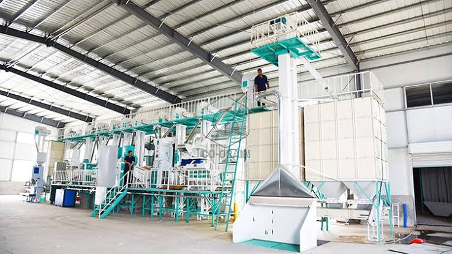
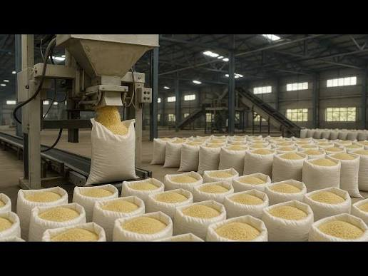
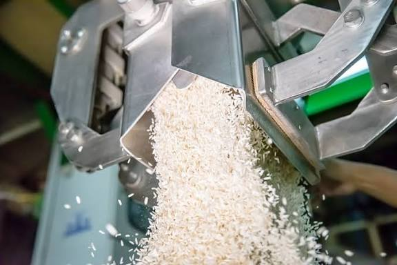
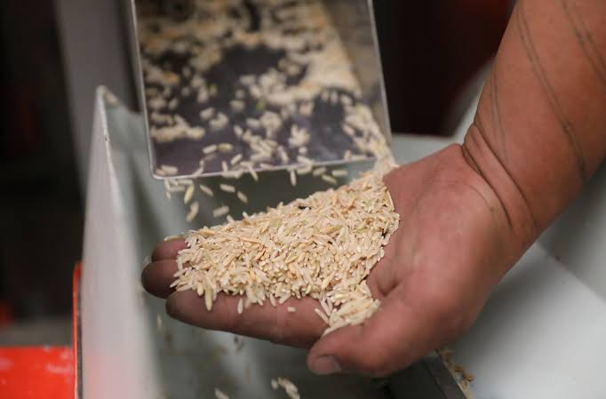
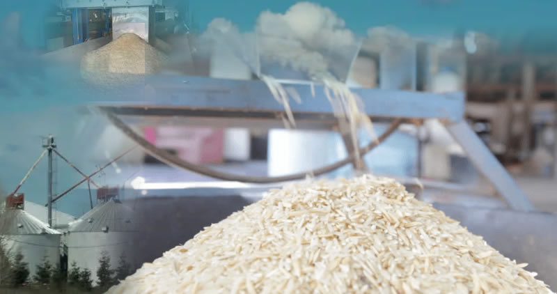
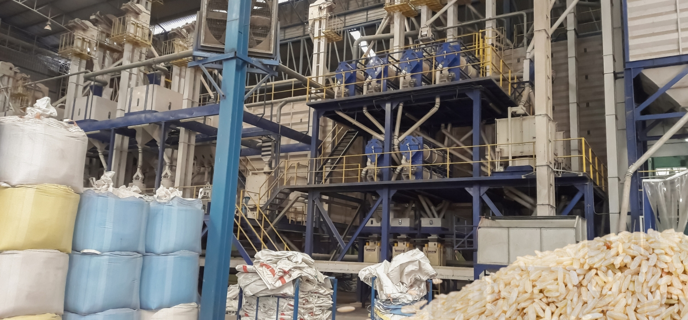
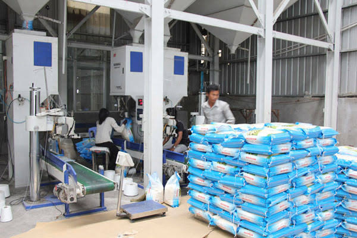
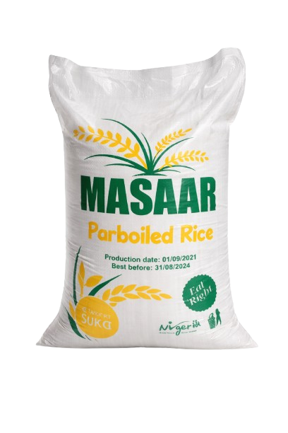

From arrival to hygienic packaging, MASAAR RICE delivers consistent quality using advanced milling, colour sorting, and water polishing technology.
Order now







Founded in the fertile heartlands, MASAAR RICE combines traditional wisdom with modern milling technology. We are not just a manufacturer — we are custodians of quality. From sourcing the finest paddy to gentle polishing, every step preserves the natural aroma and nutrients.
Our state-of-the-art facility processes over 50,000 metric tons annually, serving households and chefs who demand the best. We take pride in our sustainable practices and direct-from-mill freshness.
Carefully sourced paddy rice arrives at our facility from trusted Nigerian farmers. Each batch undergoes thorough inspection and quality verification before entering the production line to ensure only premium-grade raw materials are processed.
Advanced destoning equipment removes stones, sand, and heavy impurities. This precision stage guarantees purity and protects subsequent machinery, maintaining the integrity of the rice grains.
Optical colour sorting technology identifies and removes defective or discoloured grains. This ensures uniform appearance, superior quality, and the premium finish our customers expect.
A refined water polishing process enhances grain texture and appearance. This stage improves shine, smoothness, and overall presentation without compromising nutritional value.
The rice is automatically weighed, sealed, and packaged under strict hygienic standards. Our packaging preserves freshness and ensures safe distribution to wholesalers, retailers, and households.
"We have supplied MASAAR Rice for over two years now, and the consistency in grain quality and packaging is unmatched. Our customers always return asking specifically for MASAAR."
"The colour sorting and polishing quality stands out immediately. It cooks evenly, looks premium, and gives excellent value for money."
"From processing to packaging, MASAAR maintains a very professional standard. As a supermarket owner, reliability is everything — and they deliver every time."